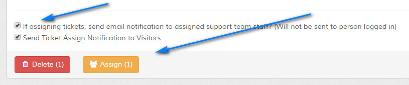
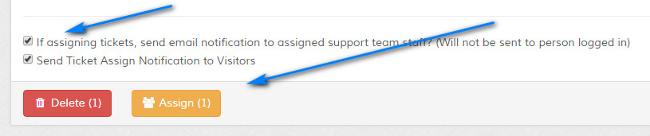

Spam Tickets
Overview
Here you can view tickets flagged as spam. This may be manually, via the CleanTalk Anti Spam API or via the imap ban filters. Please read carefully. Click example images to display full size version in new tab/window.
{kind=link}
{kind=link}
Filters
The filters allow you to filter on screen data.
Action Bar
The action bar reveals additional options for each ticket. The actions depend on the status of the ticket and the staff permissions. The following actions may be available:
Edit - Edit ticket.
Notes - View notes.
Staff - View assigned staff (if applicable).
Close - Close ticket.
Lock - Lock ticket.
Open - Open ticket.
Move to Spam - Move ticket to spam tickets screen.
Move to Open Tickets - Move ticket from spam tickets to open tickets.
Print - Print friendly view of ticket
Edit - Edit ticket.
Notes - View notes.
Staff - View assigned staff (if applicable).
Close - Close ticket.
Lock - Lock ticket.
Open - Open ticket.
Move to Spam - Move ticket to spam tickets screen.
Move to Open Tickets - Move ticket from spam tickets to open tickets.
Print - Print friendly view of ticket
Quick View
Click the icon to view ticket and replies. Useful for quick glance of ticket. Attachments and custom fields are not show here.
Accept Tickets
Use the checkboxes to check tickets which you wish to accept. Once you are happy with your selections, click "Accept Selected Tickets" to proceed. A prompt will appear asking you to confirm your action. Accepted
tickets will move to the open screen. You can choose NOT to send emails if you wish, via the options provided.


Delete Tickets
Use the checkboxes to check tickets which you wish to delete. You can batch delete tickets and this action is irreversible. Once you are happy with your selections, click "Delete Selected Tickets" to proceed.
A prompt will appear asking you to confirm your action.
You can set to auto delete spam tickets via the spam settings.
You can set to auto delete spam tickets via the spam settings.